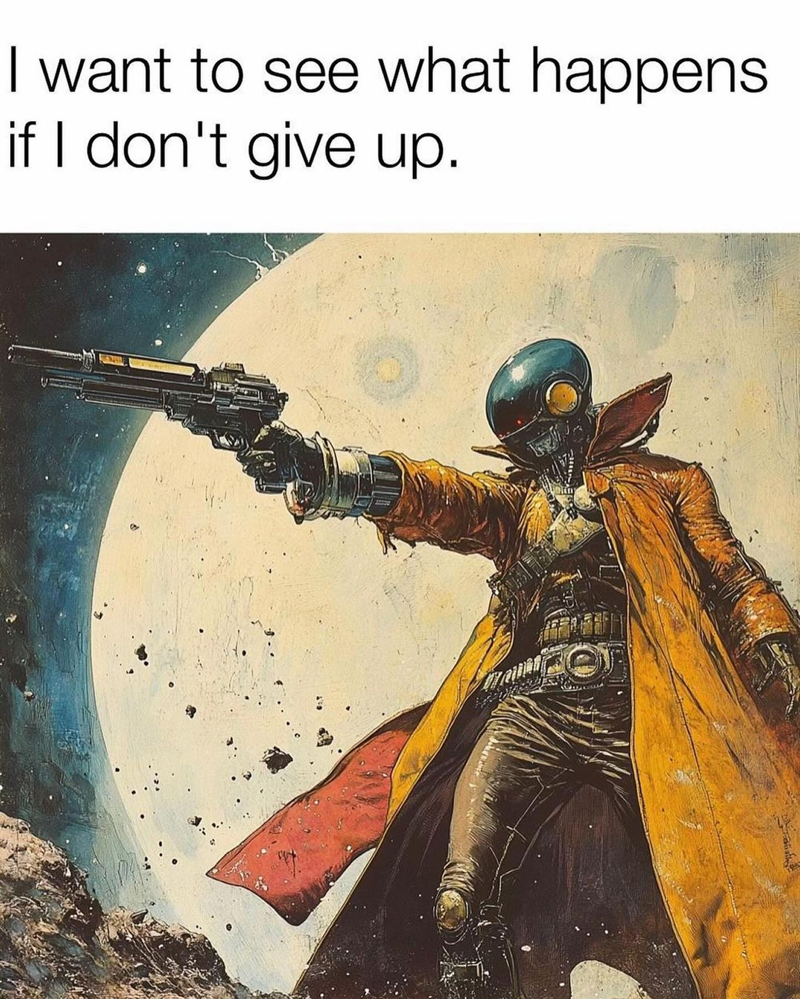
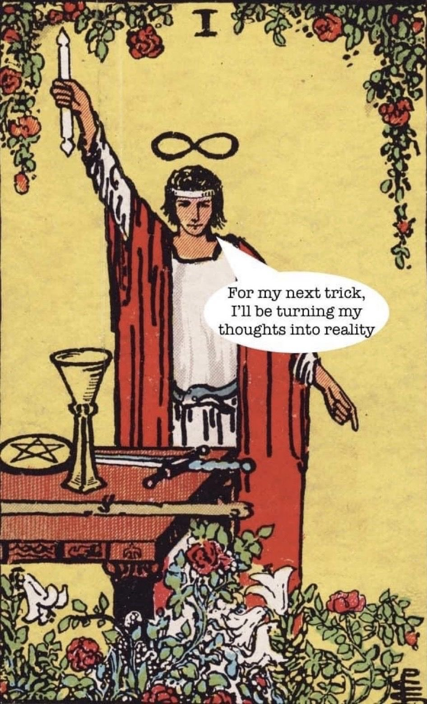
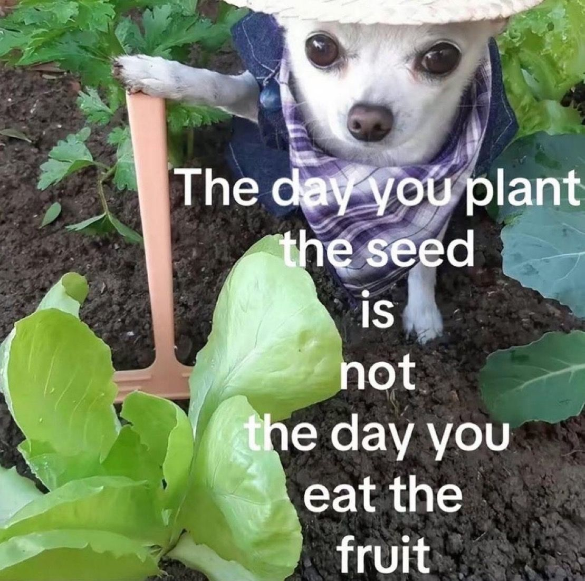
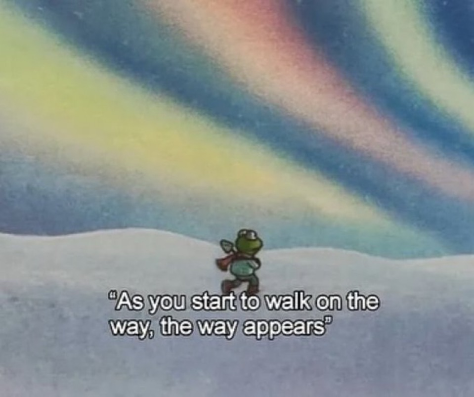

Things I Believe In
Quotes, thoughts, and ideas I've collected along the way — from books, conversations, and late-night overthinking.
- Believing in yourself is another way of returning the middle finger to the society.
- Act like you can't afford the Bread until they find out the bakery in their backyard owned by you.
- Only that anger is bad followed by repentance. Ram's anger on a person like Ravana is always auspicious.
- Prioritizing yourself doesn't define your selfishness.
- Study mathematics to understand physics. Physics to chemistry. Chemistry to biology. Biology to psychology. Psychology to economics. Economics… and philosophy to be free.
- Biggest irony of school days — the loudest words shouted were: "Please be quiet."
- When you are saying yes to others, make sure you are not saying no to yourself. — Paulo Coelho
- If you have failed to prepare, then be prepared for the failure.
- First deserve, then desire. Or — you get served what you truly deserve.
- If you find a woman who gives you both a best friend and a wife, never let her go.
- People always tell introverts to be more talkative and leave their comfort zones. Yet no one tells extroverts to shut up to make the zone comfortable.
- Being simple is the hardest.
- Biggest communication problem — we don't listen to understand. We listen to reply.
- Khamoshi bhi rakhti hain apni bhi ek zubaan, khamoshi ko chupke se sab kah jaane do!
- Before you argue with someone, ask yourself: "Is this person mentally mature enough to grasp the concept of a different perspective?" If not, there is no point to argue.
- This place makes me wonder which would be worse — to live as a monster, or to die as a good man.
- Don't cry because it's over, smile because it happened. — Dr. Seuss
- Half of being smart is knowing what you're dumb about. — Solomon Short
- He is not rich who can ride a Ferrari, but a person who can afford it. — The Psychology of Money
- A sucker and a fool born in every second. — P.T. Barnum
- तत्कर्म यन्न बंधाय सा विद्या या विमुक्तये। आयासायापरम् कर्म विद्यान्या शिल्पनैपुणम्। From Shri Vishnu Purana — That alone is action which does not bind, that alone is knowledge which liberates. All other actions are merely labor, and all other knowledge is merely craftsmanship.
- The Vermillion Effect.
- You are crazy until you become successful — then you become a genius.
- If you can't stop thinking about it, then it matters.
- Ludwig Wittgenstein — greatest philosopher.
- Hard work puts you where good luck can find you.
- Use absence to increase respect and honor.
- If you call Krishna and hear nothing — then remember, teachers are silent during exams.
- Ahimsa paramo dharma, dharma himsa tathaiva cha.
- It is always with the best intentions that the worst work is done. — Oscar Wilde
- Most of the evils in this world are done by people with good intentions. — T.S. Eliot
- Just find 2 terms from others' stories or success — like determination, discipline, hardwork. Then follow these 2 words strongly in your daily routine straight for 90 days. After those 90 days, find another 2 and add them for 90 more days. You will have all the cardinal endowments in your life. — Asu_thoughts




collecting on the way…